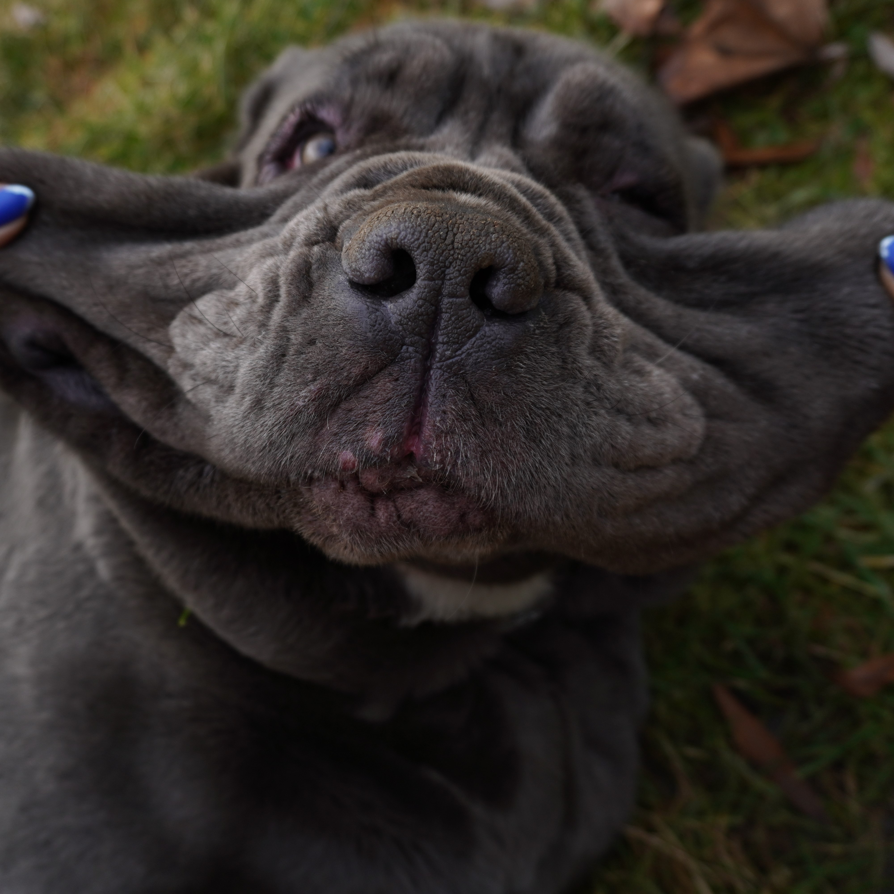

Jmenuji se Jitka a je mi 32 let. Bydlím v Prostějově, kde jsem se i narodila. Vystudovala jsem Učitelství na Pedagogické fakultě Univerzity Palackého v Olomouci. Olomouc je krásná a doufám, že se mi jednou stane domovem.
Ihned po vysoké škole jsem začala učit, ale ani po 8 letech necítím, že je tomé poslání.
...A to je také důvod, proč narážíš na tuto stránku...
WORK
Studium
Obchodní Akademie Prostějov (2006-2010)
ukončeno maturitní zkouškou
Univerzita Palackého v Olomouci - ukončeno bakalářskou zkouškou (2010-2013)
Aprobace: Společenské vědy se zaměřením na vzdělávání a Informační výchova se zaměřením na vzdělávání
Univerzita Palackého v Olomouci - ukončeno magisterskou zkouškou (2014-2016)
Aprobace: Učitelství společenských věd a učitelství technické a informační výchovy pro 2. stupeň a střední školy
Pracovní příležitosti
Střední zdravotnická škola Prostějov (2019-present)
učitel ICT a MAT
Základní škola Plumlov, příspěvková organizace (2017 - 2019)
Učitel a asistent učitele
Základní škola Hrubčice, příspěvková organizace (2016-2017)
učitel všebecných předmětů pro 1. stupeň ZŠ
K podrobnějším informacím můžeš využít mého účtu na Lindkedin.
HOBBIES
Wakeboarding
Volejbal
Zvířata
Focení
Hudba
Náklo
Pasohlávky
Čechy Pod Kosířem
Brodek u Prostějova
Kočky
psi
Sport
Zvířata

Rock
Indie
PHOTOGALLERY
Celý život strašně ráda fotím a proto jsem si nyní pořídila poloprofesionální zrcadlovku od společnosti Sony.
K úpravě v postprodukci jsem investovala do programu Adobe Photoshop, s kterým se konečně začínám seznamovat. Ale nebudu lhát, tenhle program vám výsledky zadarmo rozhodně nedá. Bude to chtít dny, měsíce, možná i roky práce, než to bude mít nějakou úroveň!